Quick sort complexity
Now, let's see the time complexity of quicksort in best case, average case, and in worst case.
We will also see the space complexity of quick sort.
1. Time Complexity
Average Case :- O(n*logn)
Worst Case :- O(n2)
Now, let's see the working of the Quicksort Algorithm.
To understand the working of quick sort algorithm, let's take an
unsorted array.
It will make the concept more clear and understandable.
Let the elements of array are -
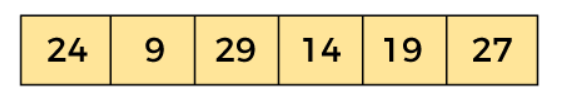
In the given array, we consider the leftmost element as pivot. So, in this case, a[left] = 24,
a[right] = 27 and a[pivot] = 24.
Since, pivot is at left, so algorithm starts from right and move towards left.
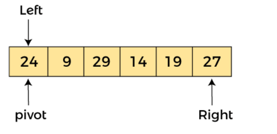
Now, a[pivot] < a[right], so algorithm moves forward one position towards left, i.e. -
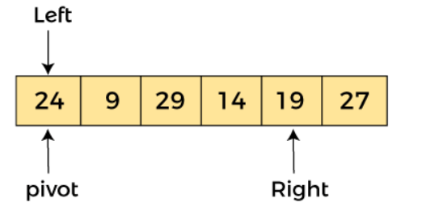
Now, a[left] = 24, a[right] = 19, and a[pivot] = 24.
Because, a[pivot] > a[right], so, algorithm will swap a[pivot] with a[right], and pivot moves to right, as -
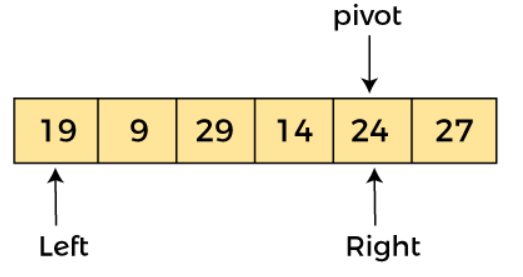
Now, a[left] = 19, a[right] = 24, and a[pivot] = 24. Since, pivot is at right, so algorithm starts
from left and moves to right.
As a[pivot] > a[left], so algorithm moves one position to right as -
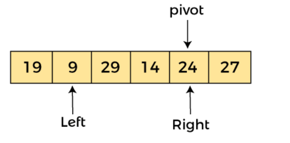
Now, a[left] = 9, a[right] = 24, and a[pivot] = 24. As a[pivot] > a[left], so algorithm moves one position to right as -.
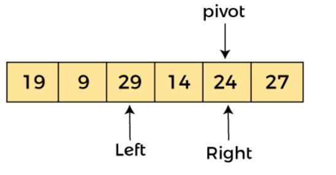
Now, a[left] = 29, a[right] = 24, and a[pivot] = 24. As a[pivot] < a[left],
so, swap a[pivot] and a[left], now pivot is at left, i.e. -
Now, we reach at the end of the array. After first pass, the array will be -
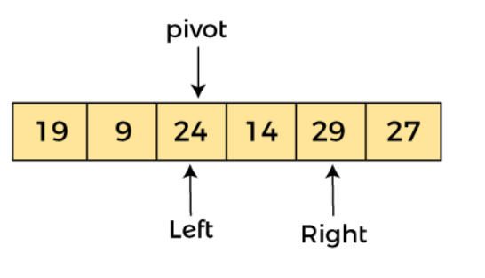
Since, pivot is at left, so algorithm starts from right, and move to left. Now, a[left] = 24, a[right] = 29,
>and a[pivot] = 24. As a[pivot] < a[right], so algorithm moves one position to left, as -
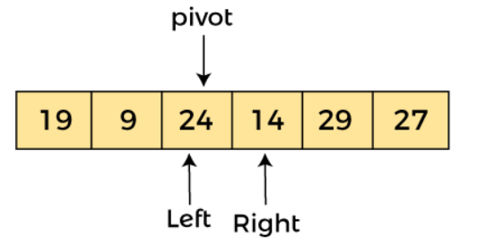
Now, a[pivot] = 24, a[left] = 24, and a[right] = 14. As a[pivot] > a[right], so, swap a[pivot] and a[right],
now pivot is at right, i.e. -
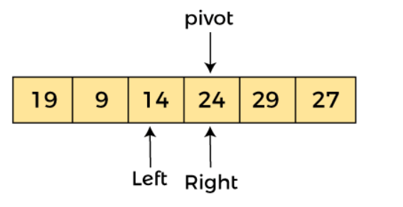
Now, a[pivot] = 24, a[left] = 14, and a[right] = 24. Pivot is at right, so the algorithm starts from left and move to right.
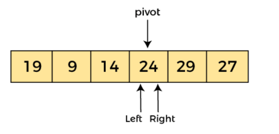
Now, a[pivot] = 24, a[left] = 24, and a[right] = 24. So, pivot, left and right are pointing the same element.
It represents the termination of procedure.
Element 24, which is the pivot element is placed at its exact position.
Elements that are right side of element 24 are greater than it, and the elements that are
left side of element 24 are smaller than it.
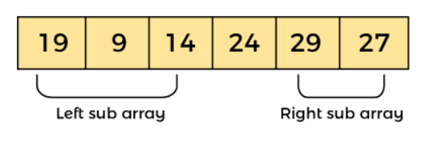
Now, in a similar manner, quick sort algorithm is separately applied to the left and right sub-arrays.
After sorting gets done, the array will be -
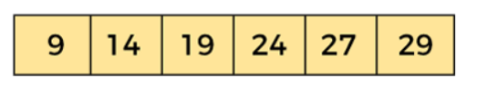
Hence, there is no swapping required, so the array is completely sorted.
Start Visualizer